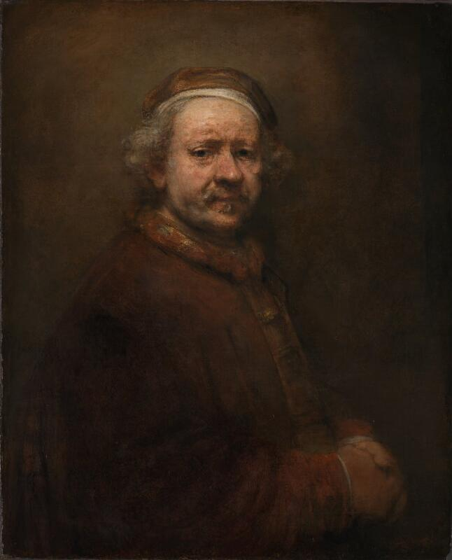
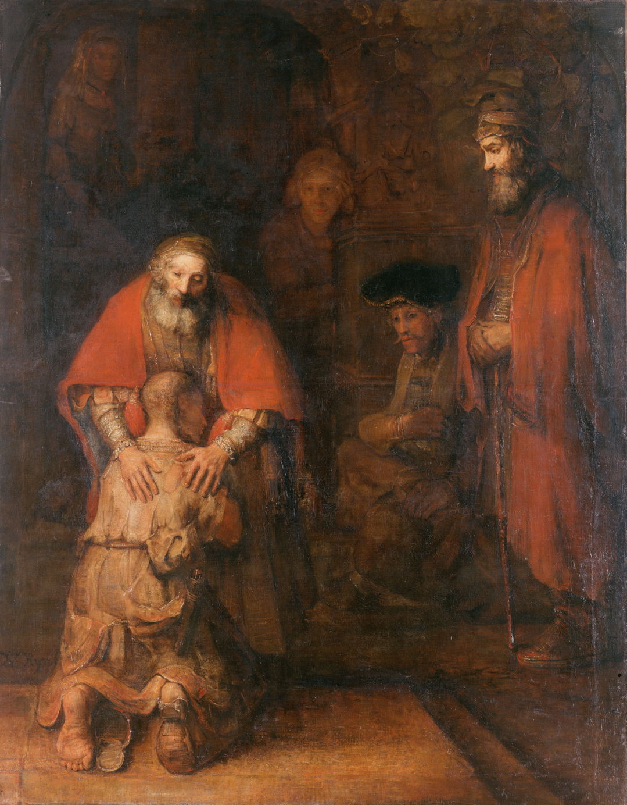

我是从人像摄影想到伦勃朗的。
在人像布光中，常会遇到“伦勃朗光”这个名称：人物一侧脸颊较亮，另一侧落入阴影，暗侧的眼睛下方留着一小块三角形亮区。这个特征容易记住，但如果只记住三角形，就容易忽略更值得理解的问题：光照到脸上以后，怎样让我们看出面部的起伏，又怎样影响我们观看这个人？
带着这个问题看伦勃朗的画，会发现值得观察的地方很多。额头与眼窝之间的明暗变化，鼻梁旁边的一道阴影，面颊逐渐隐入背景的边缘，都参与了人物的塑造。
脸颊上的三角形，是怎样出现的？
可以先想象这样一个拍摄场景：人物坐着，一盏灯放在他的前侧方，位置略高于眼睛。
额头、鼻梁和靠近灯的一侧面颊先受到照亮。鼻子挡住部分光，在另一侧投下阴影。调整灯的高度和侧向位置，当鼻子的投影与面颊上的阴影连接起来时，暗侧眼睛下方便可能留下一个三角形亮区。这是摄影中辨认“伦勃朗光”的主要特征。Profoto 的布光示例展示了这个形成过程。布光示例与现场图
这块亮区的作用，可以放在整张脸上理解。
脸部并不是一个平面。额头向前，眼窝凹陷，鼻子突出，面颊向两侧转过去。光从侧上方照来，各个部分受到的照明不同，这些差异便成为我们判断形状的线索。暗侧脸颊保留的一点光，又让这一侧的面部结构继续可见。
布光时，人们常把约四十五度的侧向灯位作为起点，但实际调整要看人物的脸。鼻子的形状、面颊的起伏、头部转向和表情，都会改变亮区。人物稍微转头，即使灯没有移动，脸上的阴影也可能明显变化。人像光线方向与面部示例
因此，比起先测准角度，更实用的观察是：鼻影落在哪里？眼睛还能否看清？暗侧面颊保留了多少光？
看《63岁自画像》：一张脸怎样从暗处显现

伦勃朗，《63岁自画像》，1669年，英国国家美术馆藏。图像来自馆方数字复制图。
在这幅自画像中，帽子、衣服和背景大多处在相近的棕褐色里，脸成为最先吸引注意的部分。但脸也没有被均匀照亮。
可以沿着额头向下看。
额头较亮，到了眉骨下方，眼窝明显暗下来。鼻梁重新接住光，鼻子旁边又形成阴影。光线随着面部的凸起与凹陷发生变化，让人看出额头、眼睛和鼻子之间的前后关系。
面颊的处理则更缓慢。亮处逐渐转为较暗的肤色，再与脸侧和背景衔接。这种过渡让面部显得圆转，而不是被一条直线分成亮、暗两半。
眼睛尤其值得停下来看看。它们并非画面中最明亮的地方，仍然能吸引目光：额头的亮色把注意带到脸上，眉眼间细小的变化又让视线停留。观看这幅画时，我们会在整个头部的形状与局部表情之间来回移动。
这里没有必要勉强找出一个标准的三角形。摄影中的“伦勃朗光”是一种具体的布光样式，而这幅画可以帮助我们理解更广泛的明暗处理。
再把目光移到衣服和双手上，会发现细节明显减少。国家美术馆的作品说明也指出，脸部的颜料更厚、处理更充分，背景用色较薄，衣领和双手则比较概括。光与细节共同把观看重点集中到脸上。作品资料与技法说明
这对人像摄影有一个直接的启发：一张照片里，各个部分可以拥有不同程度的清晰与明亮。脸、衣服和背景之间的区别，会影响观众把注意放在哪里。
阴影有多暗，与阴影边缘有多硬，是两件事
看这幅自画像，容易产生一种印象：要拍出类似的感觉，是不是应该把光打得很硬，再把暗部压得很黑？
这里需要分清两个问题。
光的软硬，主要体现在明暗交界的过渡上。 边缘清楚、变化突然，通常称为硬光；过渡较宽、变化柔和，通常称为柔光。它与光源相对于人物看起来有多大有关：在其他条件相近时，较大的光源通常能形成更柔和的阴影边缘。硬光与柔光的对照示例
暗部有多暗，则还取决于那里能收到多少其他光线。
例如，人物站在窗边，窗户提供主要照明，室内的白墙又把一部分光反射回来。背向窗户的脸颊虽然没有受到同样强的直接照明，仍可能保留细节。如果减少这些反射光，暗侧通常会更深。
拍摄时用反光板或另一盏较弱的灯照亮暗侧，就是在补光。补光的多少会改变亮侧与暗侧之间的反差；补得太多，原先明显的明暗区别也会减弱。补光对暗部的影响
所以，一张人像可以有柔和的阴影边缘，同时保持较深的暗部；也可以有清楚的投影，但暗侧仍看得见细节。
理解这一区别，调整照片时就更有方向。如果鼻影边缘太生硬，可以考虑改变光源的大小或照明方式；如果暗侧细节太少，则要观察补光与环境反射。单纯提高整张照片的亮度，并不能替代这些调整。
从脸到双手：光也能突出人物正在做什么

伦勃朗，《浪子回头》，约1668年，冬宫藏。图为公有领域画作的数字复制图。
《浪子回头》把这个问题向前推进了一步。
父亲低下头，双手放在跪着的儿子肩背上。父亲的脸、双手，以及儿子的后颈和肩背，形成一片相互连接的明亮区域。顺着这些亮处观看，很容易注意到低头、靠近与触碰的动作。
儿子的脸大部分没有展示出来，人物之间的关系仍然清楚：跪下的身体与俯身的父亲相互靠近，双手把两个人连接起来。周围较暗的区域，让这些动作更容易被看见。冬宫作品资料
这也适用于人像摄影。
拍一个人时，除了脸上的表情，还可以看他怎样放置双手、身体朝向哪里、与身边的人保持怎样的距离。光落在脸上，能够强调表情；光同时照到一只手，可能让一个原本不显眼的动作成为画面的重点。
这幅画中的柔和感，也来自姿态、距离和触碰。光把这些关系呈现出来，与人物动作一起形成观看感受。
回到拍摄：先看脸上的变化，再决定怎样用光
理解这些明暗关系，可以从一次简单的窗边观察开始。
选择没有直射阳光的窗户，让人物坐在附近。先面向窗户，再缓慢转向一侧，留意鼻影怎样移动，眼窝怎样变暗，面颊上的亮区怎样缩小。这个过程中，灯光设备并没有增加，人物的面部形状却会呈现出不同的样子。
然后保持人物位置，观察暗侧。如果眼睛和面颊细节难以辨认，可以在暗侧放一块白板，看看反射回来的光带来什么变化。白板靠近或移远时，比较明暗反差是否仍符合想要的效果。
拍摄时也可以把注意放到表情上。同样的明暗布局，配上不同的眼神、姿态和背景，会形成不同的观看感受。三角形可以帮助判断布光样式，却不能替照片决定情绪。
再回看《63岁自画像》，值得反复观察的是那些细小的变化：额头为什么亮，眼窝为什么暗，面颊在哪里转入阴影，脸侧的边缘又在哪里逐渐消失。
从人像摄影想到伦勃朗，最终可以落到这样一种观察习惯上：看光落在哪里，也看它留下了怎样的阴影；看一张脸是否清楚，也看明暗是否让这个人的形状、表情和动作得到了恰当的表现。
留言
由 Disqus 提供。